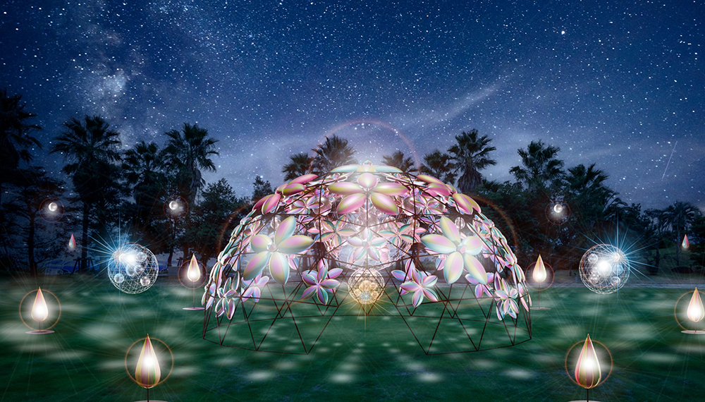
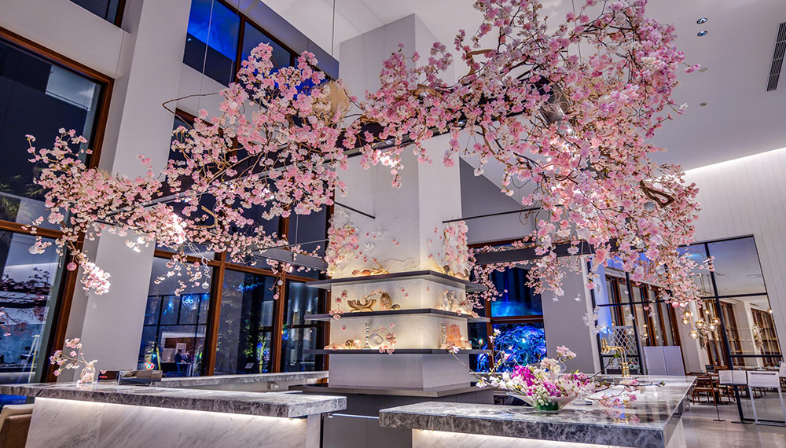
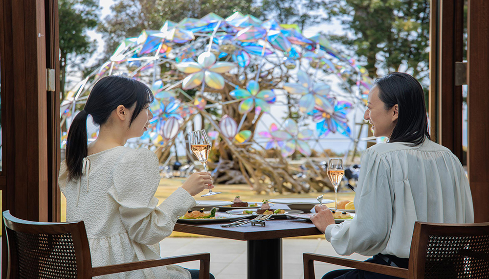
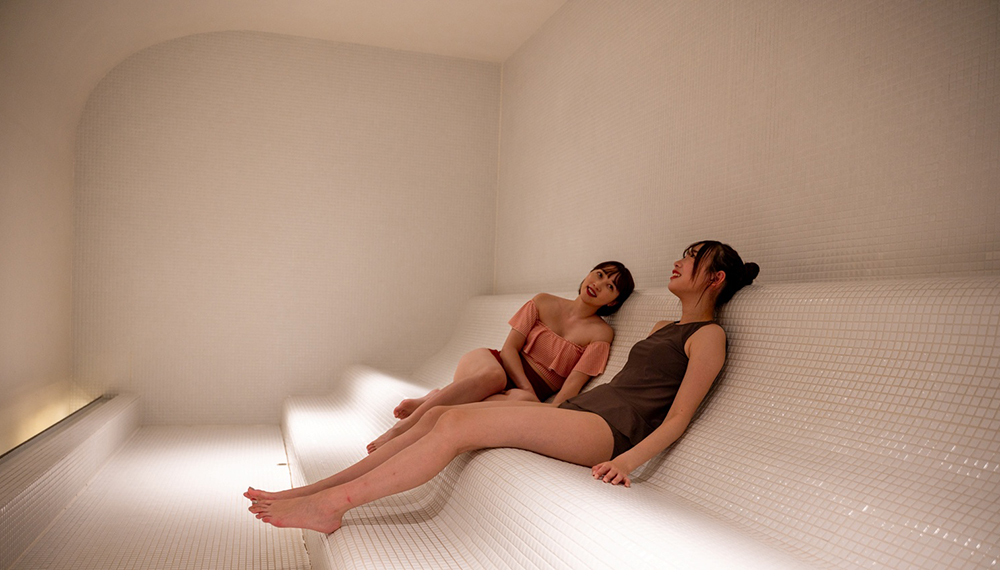
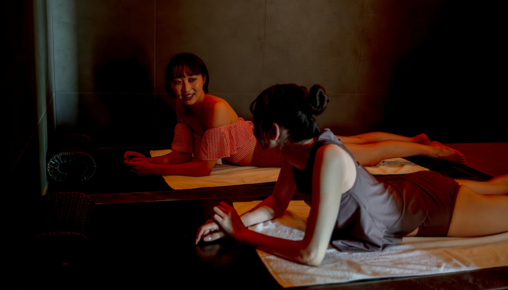
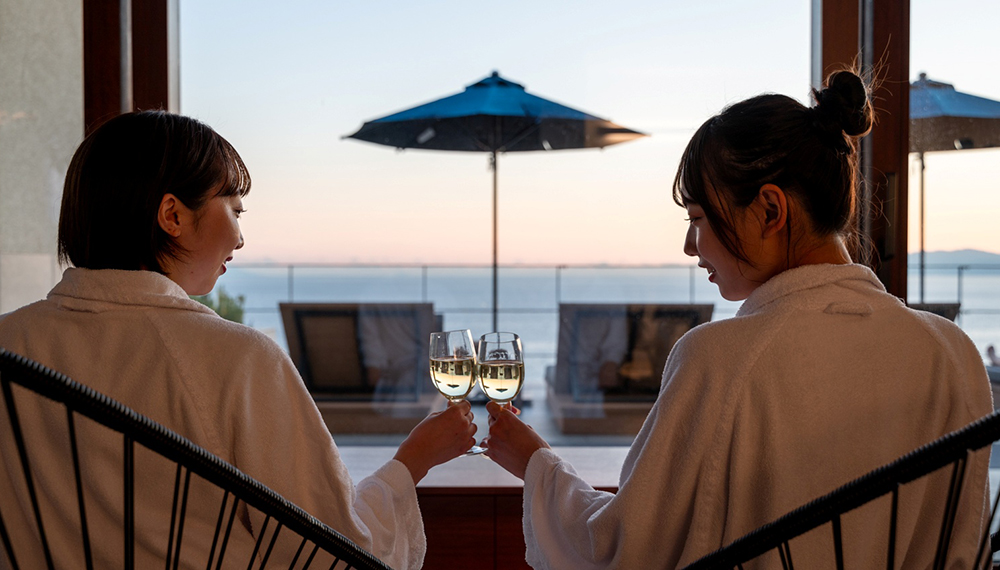
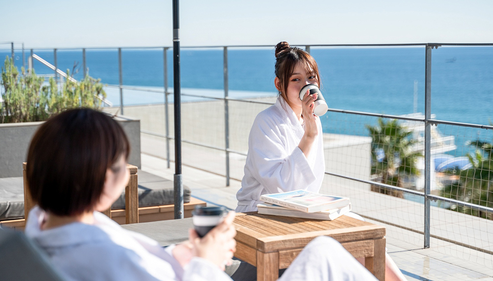
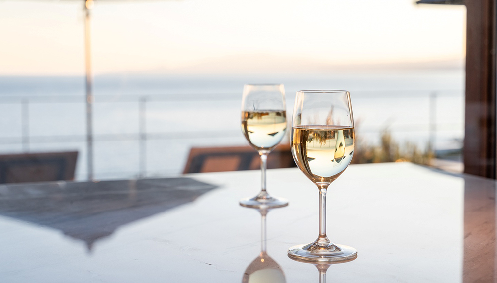

大磯で一味違うアートなお花見体験
OISO SAKURA ART 2025
- 
- 
- 
都心から1時間の湘南スパリゾート・大磯で体感するフォトジェニックな春。
アート集団ミラーボーラーが手掛ける、“HANAAKARI（ハナアカリ）”をテーマにした「SAKURA ART イルミネーション」が、ガーデンに登場！
昼には陽の光で優しい輝きを放ち、夜にはライトアップされた幻想的な空間へと表情を変える、煌めくアートを楽しめます。さらに、SAKURA ARTに包まれたバーカウンター「Spring Bar」でのカクテルや「S.DINING」での桜ランチコースなど、レストランの期間限定メニューがお花見気分を盛りあげます。この春は、心躍るSAKURA ARTを感じる、いつもと違うお花見体験をお楽しみください
～ 炎のゆらぎ～
OISO焚き火ガーデン


大磯の間伐材を使用した「スウェーデントーチ」のあたたかな炎が夜の静寂を照らし、 非日常空間へと誘います。焚き火の炎の温もり、揺れる炎の美しさ、薪がはじける音に包まれながら、五感が目覚める特別なひとときをお過ごしいただけます。 心が温まる時間の中で、大磯みかん甘酒で体の中から温まり、マシュマロを味わう至福の癒やしをお楽しみください。
ガーデンと太平洋を眺める
フォトジェニックなダイニング体験


グリーンのガーデンが目の前に広がり、太平洋の水平線まで見渡すことができるダイニング「S.DINING」では、ブッフェ形式が楽しいオードブルとデザートに、メイン料理をメニューよりチョイスするセミブッフェが楽しめます。また、季節ごとにテーマが変わるおしゃれで可愛いスイーツが注目のアフタヌーンティーも人気。
体験型サウナで
心身ととのう空間
-

- 
- 
「THERMAL SPA S.WAVE」には、アロマの香りで瞑想を促すサウナや雪降るアイスサウナ、海と富士山の絶景を楽しむパノラミックサウナなど、初心者やサウナが苦手な方も体験したくなる多彩な施設が揃います。水着着用で男女一緒に利用できる体験型の温冷交代浴で、心も体もととのった後は、太平洋を一望しながら天然温泉でリラックス。
マジックアワーに浸る
インフィニティBAR
- 
- 
- 
「THERMAL SPA S.WAVE」4Fのインフィニティプールとともに広がるサーマルテラスやフジテラス。どこまでも続く海に包まれながら、ドリンク片手に普段なかなか言えない感謝の言葉や心の内に秘めた想いを、絶景を“言い訳”にして伝えてみませんか。
≪期日・ご宿泊者さま限定≫
こどもと一緒に絶景体験


温泉・スパ施設「THERMAL SPA S.WAVE」からの絶景を6才以上12才未満のお子さまにもお楽しみいただける「こどもと一緒に絶景体験」を期日・ご宿泊者さま限定でスタート！
多種多様なサウナとインフィニティプールからの絶景、幻想的なトワイライトタイムの景色など、五感を刺激する絶景体験で、お子さまに自然の壮大さや美しさを体験していただけます。
絶景に浸りながら、家族で語らい、絆を深める時間へもおすすめ！